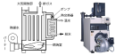

2021年
問題123 給湯設備の保守管理に関する次の記述のうち，最も不適当なものはどれか．
（1）給湯水にレジオネラ属菌汚染が認められた場合は，高濃度塩素により系統内を消毒する対策がある．
（2）無圧式温水発生機の定期検査は，労働安全衛生法に規定されている．
（3）給湯設備は，給水設備に準じた保守管理が必要である．
（4）給湯水を均等に循環させるため，返湯管に定流量弁を設置する．
（5）ベローズ形伸縮管継手は，ベローズが疲労破壊により漏水することがある．
2021年
問題123 正解（2） 頻出度AAA
無圧式温水発生器（2021-123-1図）の缶水は大気に開放され，労働安全衛生法の定める特定機械に該当せず，労働安全衛生法に検査の規定はない．
同じく，缶体内が真空状態で運転される真空式温水発生機も労働安全衛生法の対象外である．
2021-123-1図 無圧式温水発生機

出典（写真） 株式会社前田鉄工所 ( MAEDA IRONWORKS CO.,LTD. )
https://www.maedatekkou.co.jp/product/rmo
ボイラなどの安全衛生法の定期検査については，2021-123-1表参照．
2021-123-1表 ボイラ，圧力容器の性能検査，定期自主検査
| ボイラ，圧力容器の種別 | 性能検査 | 自主検査 |
| 第一種圧力容器ボイラ （小型ボイラを除く） |
1年以内ごとに1回，労働基準監督署の性能検査 | 1カ月以内ごとに1回，定期自主検査 |
| 小型圧力容器 第二種圧力容器 小型ボイラ |
（なし） | 1年以内ごとに1回，定期自主検査 |
-(1) 高濃度塩素消毒の他に，70℃の湯を20時間程度循環させる加熱処理がある．
-(4) 給湯水を均等に循環させるための定流量弁や玉形弁は，必ず返湯管に設ける．給湯管に設けると，湯の使用ピーク時に給湯不足となる．
-(5) ベローズ型伸縮管継手2021-123-2図参照．
2021-123-2図 ベローズ型伸縮管継手

出典 株式会社 ベン
https://www.venn.co.jp/products/expansion_joint/jb-18